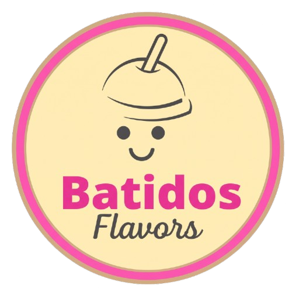
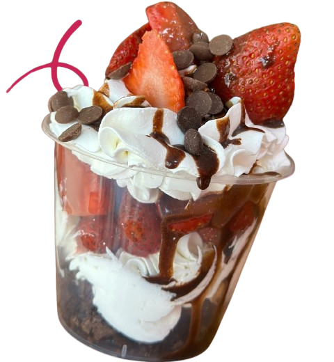
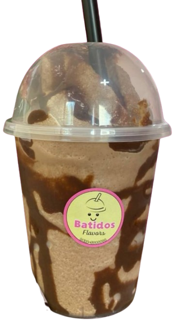

Especial de la casa
Pie de Limón Artesanal
Galleta crujiente dorada, crema sedosa y el toque cítrico de limón fresco recién elaborado.

Batidos preparados al instante, junto a una selección de postres artesanales: fresas con crema, pie de parchita y recetas caseras listas para disfrutar en Quíbor, estado Lara. Cremosidad desde el primer sorbo🥤
Una probadita de nuestro menú. Mira todas las opciones y precios en la sección Menú.
Galleta crujiente dorada, crema sedosa y el toque cítrico de limón fresco recién elaborado.

Fresas frescas seleccionadas, crema batida suave, chispas de chocolate y dados de brownie húmedo.

Cacao intenso con base suave batida al instante. La textura y cremosidad que nunca pasan de moda.
No escatimamos en calidad. Estos son los pilares de cada creación Flavors.
Seleccionadas frescas para conservar el sabor y los nutrientes reales de cada fruta.
Base cremosa que aporta textura sedosa y un punto justo de dulzor natural.
Galleta, brownie, Cerelac y chocolate para coronar cada vaso con generosidad.
Preparamos tu pedido cuando lo ordenas. Frescura garantizada en cada sorbo.
"Perfecto el pie de Parchita 🤤 una mezcla de sabores que no tiene comparación."
"Cremosidad desde el principio a fin. ¡100% recomendados!"
"Las fresas con crema y brownie son una delicia. me volvi adicto."
Escríbenos, elige tu creación y pásala a buscar directamente en Quíbor.